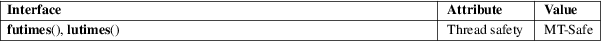

futimes, lutimes − change file timestamps
Standard C library (libc, −lc)
#include <sys/time.h>
int
futimes(int fd, const struct timeval
tv[2]);
int lutimes(const char *filename, const struct
timeval tv[2]);
Feature Test Macro Requirements for glibc (see feature_test_macros(7)):
futimes(),
lutimes():
Since glibc 2.19:
_DEFAULT_SOURCE
glibc 2.19 and earlier:
_BSD_SOURCE
futimes() changes the access and modification times of a file in the same way as utimes(2), with the difference that the file whose timestamps are to be changed is specified via a file descriptor, fd, rather than via a pathname.
lutimes() changes the access and modification times of a file in the same way as utimes(2), with the difference that if filename refers to a symbolic link, then the link is not dereferenced: instead, the timestamps of the symbolic link are changed.
On success, zero is returned. On error, −1 is returned, and errno is set to indicate the error.
Errors are as for utimes(2), with the following additions for futimes():
|
EBADF |
fd is not a valid file descriptor. |
|||
|
ENOSYS |
The /proc filesystem could not be accessed. |
The following additional error may occur for lutimes():
|
ENOSYS |
The kernel does not support this call; Linux 2.6.22 or later is required. |
For an explanation of the terms used in this section, see attributes(7).

Linux, BSD.
futimes()
glibc 2.3.
lutimes()
glibc 2.6.
lutimes() is implemented using the utimensat(2) system call.
utime(2), utimensat(2), symlink(7)